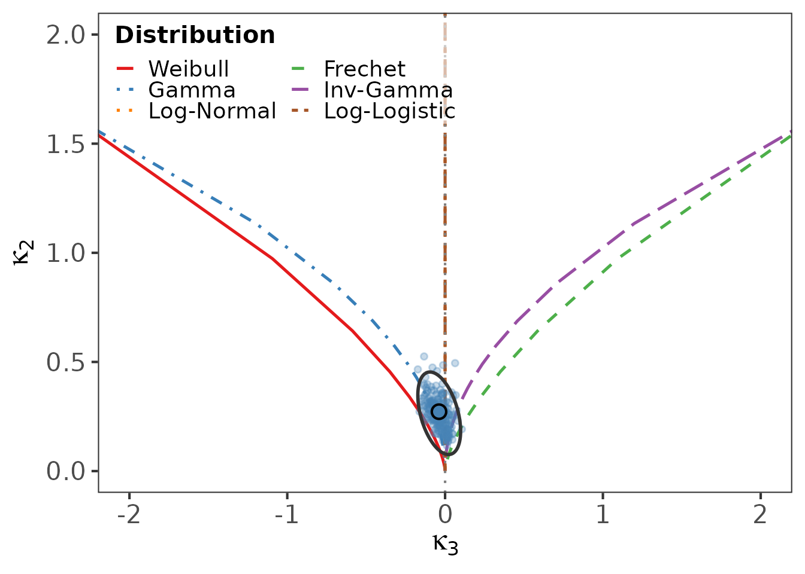

library(logcumulant)
data(reliability_datasets)Why log-cumulants?
For positive-support data the Mellin transform plays the role that the Fourier or Laplace transform plays on the whole line. Differentiating the Mellin characteristic function at its central point yields the log-cumulants : the cumulants of . These quantities are natural shape descriptors for reliability distributions and behave well under the multiplicative structure typical of lifetime data.
The package turns these descriptors into (i) diagnostic diagrams and (ii) formal goodness-of-fit tests.
A first analysis
We use the classic ball-bearing fatigue-life dataset bundled with the package.
bb <- reliability_datasets$BallBearing
length(bb)
#> [1] 23
summary(bb)
#> Min. 1st Qu. Median Mean 3rd Qu. Max.
#> 17.88 47.04 67.80 72.22 95.88 173.40The quickest entry point is plot_lc(), which draws the
log-cumulant diagram with a bootstrap cloud of the sample estimate:
plot_lc(bb, B = 200)
The sample point sits near the Weibull and Gamma loci, suggesting a light-tailed model.
Comparing candidate models
gof_compare_all() fits all six families and reports the
three
statistics, the Anderson–Darling and Cramer–von Mises tests, and the
AIC. The parametric bootstrap is recommended for the p-values:
gof_compare_all(bb, use_bootstrap = TRUE, B = 199, seed = 1)
#> Dist T2_23 p_23 T2_123 p_123 T2_full
#> stat Weibull 1.7684442 0.1835747 4.1163555 1.276864e-01 12.4859496
#> stat1 Frechet 1.3820542 0.2397516 269.3727725 3.209561e-59 79.9397649
#> stat2 Gamma 0.4802072 0.4883285 0.4003921 8.185703e-01 0.8889327
#> stat3 InvGamma 0.9577940 0.3277433 4.6352936 9.850512e-02 5.5465619
#> stat4 LogNormal 0.2566868 0.6124055 0.3937496 8.212935e-01 2.6732346
#> stat5 LogLogistic 0.2275893 0.6333171 0.2440233 8.851381e-01 3.6104646
#> p_full AD AD_p CvM CvM_p AIC pb_23
#> stat 1.408080e-02 0.3285906 0.9152403 0.05795851 0.8268379 231.3826 0.3316583
#> stat1 1.793764e-16 0.5755471 0.6714156 0.07790501 0.7040599 235.5642 0.4572864
#> stat2 9.261432e-01 0.2153670 0.9856293 0.03909866 0.9377403 230.0586 0.5728643
#> stat3 2.356669e-01 0.3140940 0.9272090 0.04229426 0.9209759 232.3086 0.3567839
#> stat4 6.139063e-01 0.1888150 0.9931619 0.02896580 0.9794400 230.2571 0.6130653
#> stat5 4.612819e-01 0.1957724 0.9915227 0.03269626 0.9664924 230.7445 0.8040201
#> pb_123 pb_full
#> stat 0.1758794 0.4321608
#> stat1 0.0000000 0.1256281
#> stat2 0.5276382 0.9849246
#> stat3 0.1005025 0.5527638
#> stat4 0.4522613 0.8040201
#> stat5 0.7236181 0.7487437Where to go next
-
vignette("diagrams")explains the three diagnostic diagrams. -
vignette("gof-tests")covers the tests and why the bootstrap is needed. -
vignette("simulation")reproduces the size and power studies.